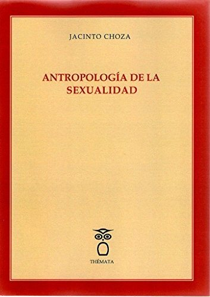
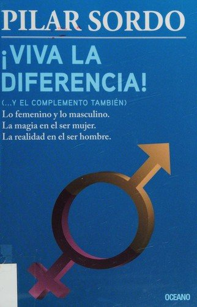
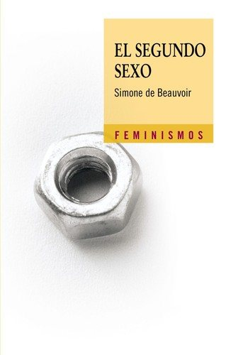

Libros de sexualidad, género y afectividad
Libros de sexualidad, género y afectividad en español: 18 libros completos para leer gratis aquí mismo y 8 fichas de títulos actuales.
Manual Go-Byst! Un programa breve de sensibilización y movilización de espectadores frente al acoso sexual entre adolescentesSánchez Jiménez, Virginia; Rodríguez de Arriba, María Luisa; Muñoz Fernández, Noelia; Ortega Rivera, Francisco Javier; Durán Guerrero, Estrella; Moreno Albalat, María Isabel
Manual Go-Byst! Un programa breve de sensibilización y movilización de espectadores frente al acoso sexual entre adolescentesSánchez Jiménez, Virginia; Rodríguez de Arriba, María Luisa; Muñoz Fernández, Noelia; Ortega Rivera, Francisco Javier; Durán Guerrero, Estrella; Moreno Albalat, María IsabelPrevención de la violencia de género en parejas adolescentes desde la parentalidad positivaMateos Inchaurrondo, Ainoa; Rodríguez Rodríguez, Julio
Prevención de la violencia de género en parejas adolescentes desde la parentalidad positivaMateos Inchaurrondo, Ainoa; Rodríguez Rodríguez, JulioMasculinidades y violencia de géneroGuerrón Montero, María Alexandra
Masculinidades y violencia de géneroGuerrón Montero, María AlexandraAbuso y explotación sexual en adolescentes: violencia sexual en centros de acogimiento residencialArcajo Fuentes, Natalia; Galindo Pérez, Sara; Martín Gómez, Ángel; Gómez Rodilla, Israel; Calcedo Roda, Paula
Abuso y explotación sexual en adolescentes: violencia sexual en centros de acogimiento residencialArcajo Fuentes, Natalia; Galindo Pérez, Sara; Martín Gómez, Ángel; Gómez Rodilla, Israel; Calcedo Roda, PaulaLa violencia de género en adolescentes y jóvenes: claves para la prevenciónRebollo Catalán, María Ángeles; Vega Caro, Luisa; Bascón Díaz, Miguel Jesús
La violencia de género en adolescentes y jóvenes: claves para la prevenciónRebollo Catalán, María Ángeles; Vega Caro, Luisa; Bascón Díaz, Miguel JesúsManual para la prevención de la violencia de géneroHeras González, Purificación; Torres Díaz, María Concepción; Schmal Cruzat, Francisca Nicole; Ferrús Batiste, Jordi
Manual para la prevención de la violencia de géneroHeras González, Purificación; Torres Díaz, María Concepción; Schmal Cruzat, Francisca Nicole; Ferrús Batiste, JordiProtocolo de detección implícita de violencia de género en mujeres con adicciones (DIVG-MA-UNAD)Picado Valverde, Eva María; Guzmán Ordaz, Raquel; Yurrebaso Macho, Amaia; García Valverde, Esther; Antón Rubio, María Concepción; Álamo Gómez, Nuria María del; Torres García, Ana Victoria; Sanz Mulas,
Protocolo de detección implícita de violencia de género en mujeres con adicciones (DIVG-MA-UNAD)Picado Valverde, Eva María; Guzmán Ordaz, Raquel; Yurrebaso Macho, Amaia; García Valverde, Esther; Antón Rubio, María Concepción; Álamo Gómez, Nuria María del; Torres García, Ana Victoria; Sanz Mulas,Difícil ser hombre : Nuevas masculinidades latinoamericanasFuller, Norma
Difícil ser hombre : Nuevas masculinidades latinoamericanasFuller, NormaLa lucha sexual de los adolescentes en la hipermodernidadRicardo Fandiño, Vanessa Rodríguez-Pousada
La lucha sexual de los adolescentes en la hipermodernidadRicardo Fandiño, Vanessa Rodríguez-PousadaAntropología de la sexualidadChoza Armenta, Jacinto Luis
Antropología de la sexualidadChoza Armenta, Jacinto Luis
Sueños de amor y encuentros decisivos : el poder de la pasión románticaPerson, Ethel Spector
Sueños de amor y encuentros decisivos : el poder de la pasión románticaPerson, Ethel SpectorRelaciones interpersonales: Atracción, amor y sexualidadGuil Bozal, Rocío; Mestre Navas, José Miguel; Cantero Sánchez, Francisco Javier; León Rubio, José María
Relaciones interpersonales: Atracción, amor y sexualidadGuil Bozal, Rocío; Mestre Navas, José Miguel; Cantero Sánchez, Francisco Javier; León Rubio, José MaríaAdolescencia, Medios y Sexualidades: Reimaginar la Educación Afectivo-Sexual con el Proyecto TRANSGELIT. Libro Blanco.Fedele, Maddalena; Álvarez Cueva, Priscila; Blanco Fernández, Vítor; Boté-Vericad, Juan-José; Carnicé Mur, Marga; Colomé, Cristina; Faure-Carvallo, Adrien; Fernández, Laura; Fuentes Moreno, Concha; Go
Adolescencia, Medios y Sexualidades: Reimaginar la Educación Afectivo-Sexual con el Proyecto TRANSGELIT. Libro Blanco.Fedele, Maddalena; Álvarez Cueva, Priscila; Blanco Fernández, Vítor; Boté-Vericad, Juan-José; Carnicé Mur, Marga; Colomé, Cristina; Faure-Carvallo, Adrien; Fernández, Laura; Fuentes Moreno, Concha; GoLa intervención con mujeres víctimas de violencia de género y con sus hijos e hijasPaz Rodríguez, Juan Ignacio; Fernández, Paola; Parra Jiménez, Águeda
La intervención con mujeres víctimas de violencia de género y con sus hijos e hijasPaz Rodríguez, Juan Ignacio; Fernández, Paola; Parra Jiménez, ÁguedaLa sexualidadCasado Mejía, Rosa María
La sexualidadCasado Mejía, Rosa MaríaCuestión de sexo. Qué dice la biología acerca de la determinación sexual en humanos. Lección Inaugural del Aula de la Experiencia de la Universidad de Sevilla. Curso Académico 2017-2018López Calderón, Isabel
Cuestión de sexo. Qué dice la biología acerca de la determinación sexual en humanos. Lección Inaugural del Aula de la Experiencia de la Universidad de Sevilla. Curso Académico 2017-2018López Calderón, IsabelLa violencia de géneroGil-Rodríguez, Eva P.; Lloret Ayter, Imma
La violencia de géneroGil-Rodríguez, Eva P.; Lloret Ayter, ImmaPedagogía de la sexualidadFont, Pere, 1956-
Pedagogía de la sexualidadFont, Pere, 1956-Los 5 lenguajes del amorGary Chapman
Los 5 lenguajes del amorGary ChapmanViva la diferenciaPilar Sordo
Viva la diferenciaPilar Sordo
El segundo sexoSimone de Beauvoir
El segundo sexoSimone de Beauvoir
Amores que matanVicente Garrido
Amores que matanVicente GarridoJuventud en éxtasisCarlos Cuauhtémoc Sánchez
Juventud en éxtasisCarlos Cuauhtémoc SánchezEl arte de amarErich Fromm
El arte de amarErich FrommInteligencia eróticaEsther Perel
Inteligencia eróticaEsther PerelTal como eresEmily Nagoski
Tal como eresEmily NagoskiTemas relacionados
¿Estás eligiendo carrera?
Haz gratis el test de orientación vocacional de AURZANE: intereses, aptitudes, autoconcepto y hábitos de estudio, con informe completo.